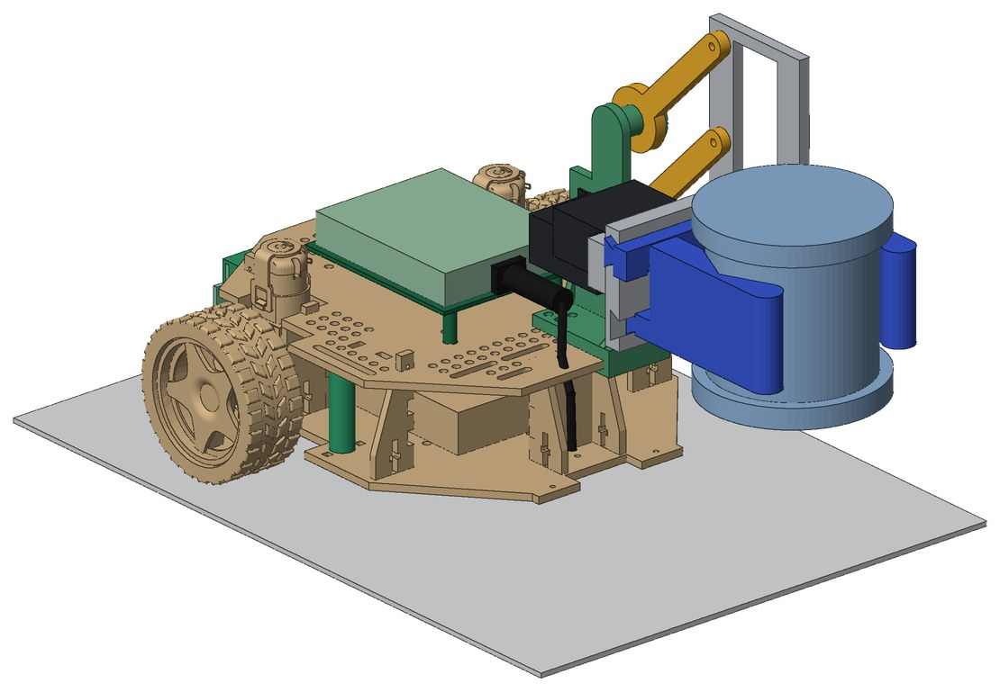
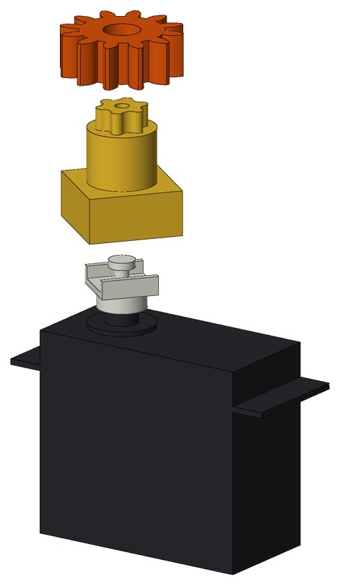
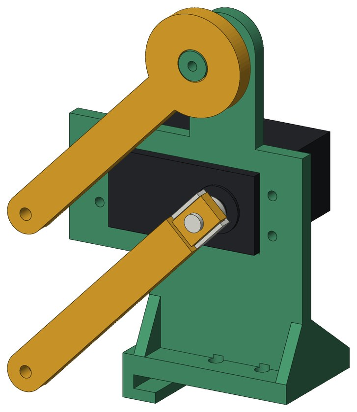
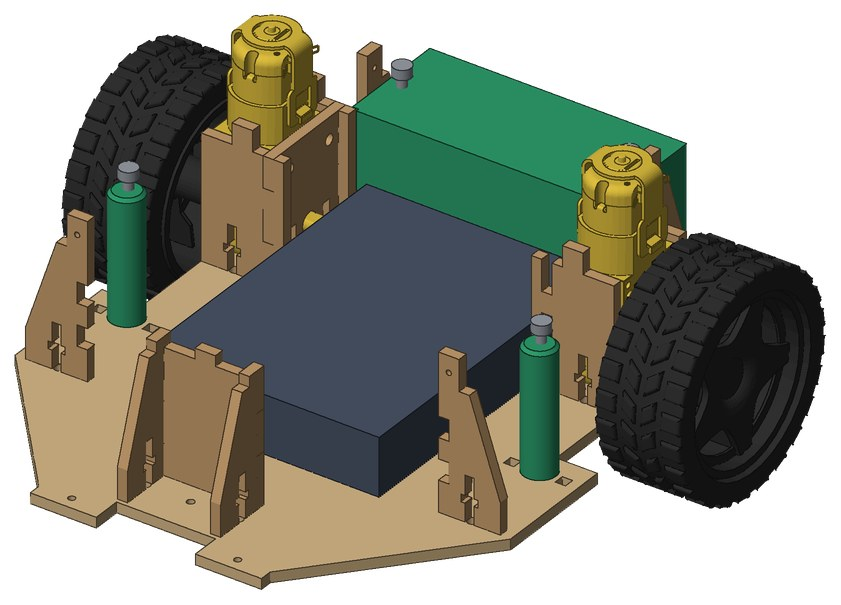
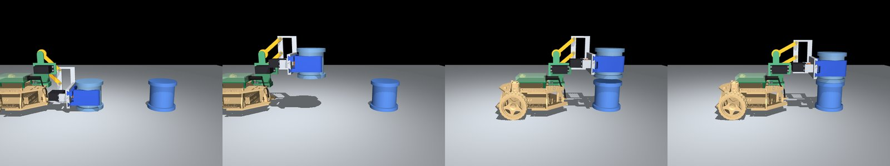

Overview
Red Robot is a three-day hardware hackathon run by the CMU Robotics Club, where teams of five turn a starter-kit robot into a competition machine with their own mechanisms, electronics and code. The game is kept secret until kickoff. This year it involved picking up 3 in flanged pipes and stacking them, so our team built a small UMI-style gripper and lift for the robot car. Two hobby servos drive it, one to open and close the jaws and one to raise and lower the arm. The whole mechanism is about 83 g of PLA, and every print plate stays under the event's 100 g and 2.5 hour limit.

Gripper and lift
Two V-shaped jaws ride on dovetail slides and are driven together by a 12-tooth gear on the servo, opening from 27.7 to 137 mm with an end stop so they can't run off their slides. The jaw tips have a round nose so the pipe slides into the V instead of catching. The lift is a parallelogram linkage with 65 mm links, so the gripper stays level while it rises 92 mm over 90° of servo rotation.


Keeping the car upright
With the gripper reaching well ahead of the front caster, the car tipped forward easily, and the top plate could lift off its tabs. A rear ballast box and two plate pillars fix both, bolting through existing holes. A tipping estimate showed that about 150 g of ballast raises the braking needed to tip the car with a 50 g pipe from 0.21 g to 0.47 g.

Simulation
The CAD is fully parametric in CadQuery, with an interference sweep over jaw gaps and lift angles. A MuJoCo model built from the same CAD accepts the same command packets as the car's ESP32 board. In the stacking demo the car drives while the arm moves, cancelling the forward swing of the linkage so the pipe goes almost straight up and down, and it lands 0.2 mm off centre.
